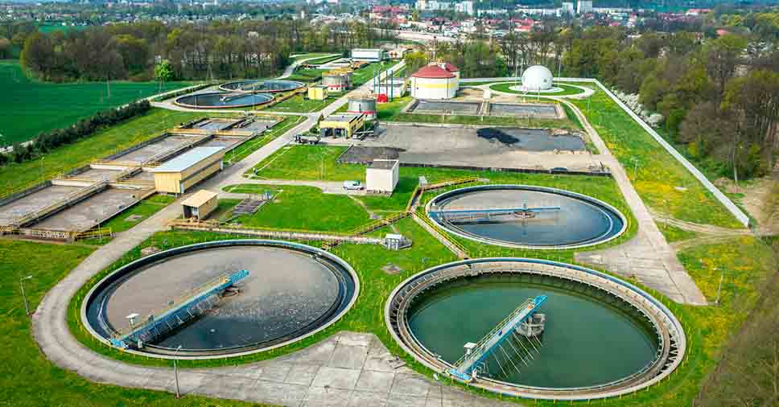

Saneamento Básico: direito de todos?
Data Artigo: set.-dez. 2021 | Data Publicação: maio/2023
O estudo do saneamento básico no Brasil passa por uma compreensão sistemática de fatores sociais, econômicos e políticos, com a representação de toda a sociedade em um cenário histórico que se modifica a cada geração e a cada acontecimento. Este artigo tem por objetivo discutir, em um contexto social e político, as ações que envolvem a evolução dos serviços de saneamento no Brasil e no município de Campos dos Goytacazes (RJ). A metodologia do presente estudo abrange revisão de literatura e análise crítica dos aspectos apresentados. Da análise, foi possível perceber que existem diversos debates no sentido de ser um direito social, para todos e um serviço de saneamento básico voltado à mercadoria. Grande parte da população brasileira não tem acesso à água potável e à coleta de esgotos, e a lei é uma garantia para que esta questão seja solucionada, mas ainda estamos distantes de resolver esse grande problema.
Leia MaisSaneamento básico no Brasil: considerações sobre investimentos e sustentabilidade para o século XXI*
Data do Artigo: mar./abr. 2011 | Data da Publicação: maio/2023 A quantidade de água necessária para o desenvolvimento das atividades humanas, tanto no processo de produção de vários tipos de produtos quanto no abastecimento para o consumo de água propriamente dito, vem aumentando significativamente ano após ano no Brasil. Uma solução para a preservação dessas águas é o investimento em saneamento e no tratamento do esgoto sanitário, que é realizado por meio de estações de tratamento de esgoto que reproduzem, em um menor espaço e tempo, a capacidade de autodepuração dos cursos d'água. As águas recuperadas por essas estações possuem uma grande variedade de aplicações, entre elas: (i) irrigação de campos de esportes, praças etc.; (ii) usos paisagísticos; (iii) descarga de toaletes; (iv) combate a incêndios; (v) lavagem de automóveis; (vi) limpeza de ruas; (vii) usos na construção (Prosab, 2006). Tais alternativas contribuem para a diminuição do uso de água potável para estes fins, além de gerar externalidades positivas sobre a saúde e o meio ambiente (Toneto Junior, 2004:31).
Leia Mais